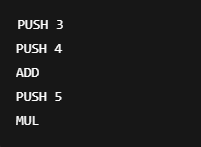

2.2 Representaciones de código.Intermedio.
El código intermedio (IR, Intermediate Representation) es una forma abstracta y parcialmente traducida del
código fuente, que no es ni código fuente original ni código máquina final.
Se genera durante el proceso de compilación después del análisis semántico y antes de la generación de código
final. Sirve como puente entre el análisis del lenguaje y la producción del código ejecutable.
¿Para qué sirve el código intermedio
- Para facilitar la portabilidad del compilador.
- Para permitir optimizaciones sin depender del hardware.
- Para servir como una capa intermedia para producir diferentes versiones del código final (para distintas arquitecturas o máquinas).
Características del código intermedio
- Es más simple que el código fuente.
- Conserva la estructura semántica del programa.
- Suele ser más cercano al lenguaje ensamblador, pero todavía independiente de la máquina.
- Se puede almacenar como texto o estructuras internas.
¿Qué son las notaciones infija, prefija y postfija?
Son formas diferentes de escribir expresiones (por ejemplo, operaciones matemáticas), dependiendo de la posición del operador respecto a los operandos
2.2.1 Notación Polaca
- Forma: operador operando1 operando2
- Ejemplo: * + 3 4 5
Explicación
- También conocida como notación prefija.
- El operador se coloca antes de los operandos.
- No necesita paréntesis para establecer el orden de evaluación.
| Ventajas |
Desventajas |
| El orden de operaciones es claro sin ambigüedad. |
Poco intuitiva para humanos sin entrenamiento. |
| Fácil de procesar por analizadores sintácticos. |
Difícil de leer o escribir en expresiones complejas. |
Evaluación paso a paso del ejemplo * + 3 4 5:
- Se evalúa primero + 3 4 → 7
- Luego: * 7 5 → 35
- Resultado final:35
2.2.2 Código P.
- Forma: Instrucciones que operan en una pila de operandos.
- Operacion: (3 + 4) * 5

Explicación
- Se usa una pila para almacenar valores temporales.
- Las operaciones toman los valores del tope de la pila.
| Ventajas |
Desventajas |
| Simple para generar código ejecutable. |
Difícil de depurar o leer. |
| No requiere variables temporales. |
Requiere una máquina de pila para ejecutarlo directamente. |
- Paso 1: PUSH 3 → pila: [3]
- Paso 2: PUSH 4 → pila: [3, 4]
- Paso 3: ADD → pila: [7]
- Paso 4: PUSH 5 → pila: [7, 5]
- Paso 5: MUL → pila: [35]
- Paso 6: Resultado = 35
2.2.3 Triplos.
- Forma: (index) operación, operando1, operando2
- Ejemplo: (3 + 4) * 5
Explicación
- Los triplos son una forma de código intermedio que se basa en referencias de resultados por sus índices.
- No se usan variables temporales, sino los números de las instrucciones anteriores.
| Ventajas |
Desventajas |
| Más compacto que el código de tres direcciones. |
Difícil de traducir directamente a código máquina. |
| Útil en representaciones internas de compiladores. |
Difícil de optimizar si las instrucciones son muy dependientes entre sí. |
2.2.4 Cuádruplos.
- Forma: (operación, operando1, operando2, resultado)
- Operación: (3 + 4) * 5:
Explicación
- Se utiliza una variable temporal para guardar el resultado de cada operación.
- Es una forma extendida del código de tres direcciones.
| Ventajas |
Desventajas |
| Fácil de traducir a ensamblador. |
Usa más espacio que los triplos. |
| Cada resultado tiene un nombre claro (variable temporal). |
Requiere una tabla de temporales. |
Ejemplo
- Paso 1: t1 = 3 + 4 → 7
- Paso 2: t2 = t1 * 5 → 35
- Resultado: t2 = 35
← Volver al índice